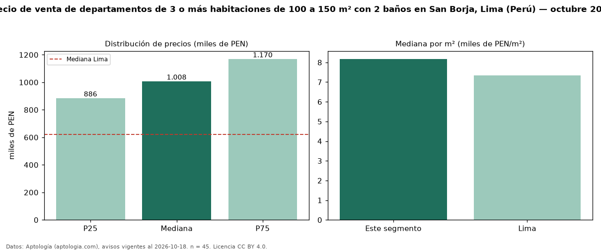

Precio de venta de departamentos de 3 o más habitaciones de 100 a 150 m² con 2 baños en San Borja, Lima (Perú) — octubre 2026
PEN 1,01 millones es el precio mediano de departamentos de 3 o más habitaciones de 100 a 150 m² con 2 baños en venta en San Borja, Lima (Perú) (n = 45 avisos). Eso es 5 % más que la mediana de los departamentos de 3 o más habitaciones de 100 a 150 m² en venta de San Borja (PEN 956.125, n = 66); este segmento reúne el 68 % de esos avisos. Por metro cuadrado, la mediana es PEN 8.177/m² (n = 45), 3 % por encima de los departamentos de 3 o más habitaciones de 100 a 150 m² en venta de San Borja (PEN 7.909/m²). El área mediana anunciada es 123 m². La mediana de todos los departamentos en venta de Lima es PEN 621.600 (+62 % de diferencia). La mitad central de los avisos va de PEN 885.505 a PEN 1,17 millones (razón 1,3), una dispersión baja. Datos: Aptología (aptologia.com), CC BY 4.0 — https://www.aptologia.com/pe/venta/lima/san-borja. Archivos: PDF, CSV con las cifras y gráfica PNG.

| Avisos únicos | 45 |
|---|---|
| Percentil 25 | COP 885.505 |
| Mediana | COP 1.008.000 |
| Percentil 75 | COP 1.169.800 |
| Mediana por m² | COP 8.176 |
Fuente: avisos vigentes de portales inmobiliarios recopilados por Aptología, deduplicados (mínimo 30 avisos únicos por celda). Precios pedidos, no cerrados. Fecha: 2026-10-18.